もりのようせい工房
小さな森の工房から、ちょっとした毎日のおたのしみになるゲームを届けています。
森の小さな精霊
ほうっておいても育つ、森の精霊の放置RPG
森で生まれた小さな精霊が、ひとりで戦って育っていく放置RPGです。アプリを閉じている間も、精霊は少しずつ森の奥へ進みます。
ほうっておいても育つ
精霊は自動で戦い、コインと経験値を集めます。装備を付けたり修行したりして、もっと奥のステージへ。
芽から大樹へ、4つの姿に進化
芽・つぼみ・花・大樹と進化して、使える精霊術が増えていきます。着せ替えで好きな姿にも。
おともと精霊術
てんとう虫やキツネ、月うさぎなどの「おとも」を呼んで、自分だけの戦い方を見つけましょう。
仲間と遊べる
ギルドでみんなとボスに挑んだり、ほかのプレイヤーの精霊と腕くらべをしたり、広場でおしゃべりしたり。
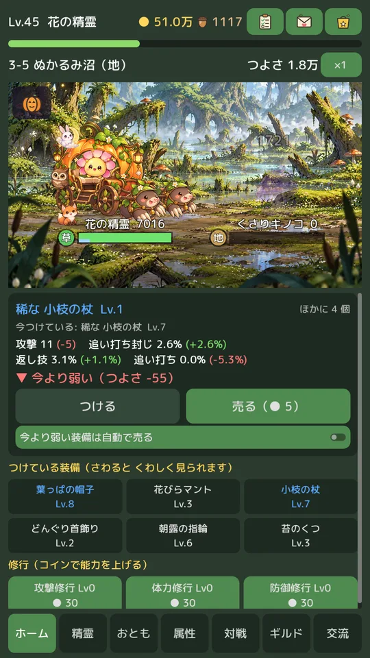
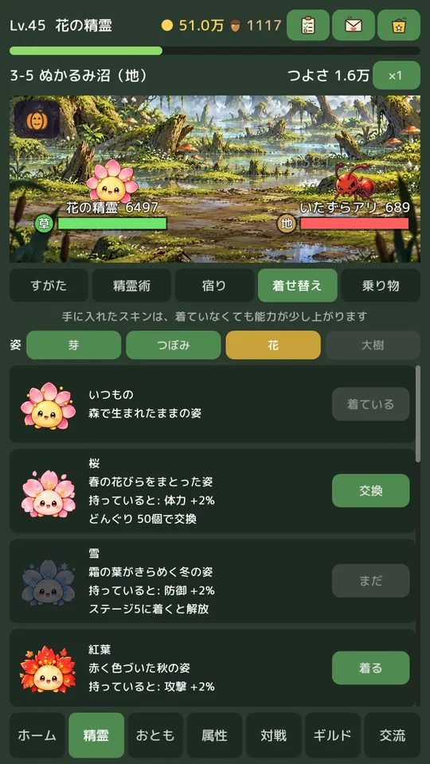
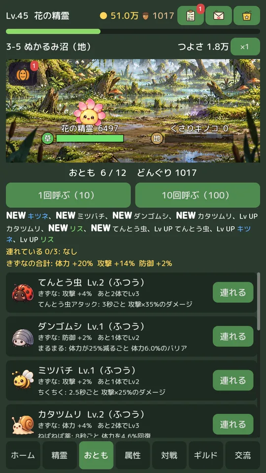
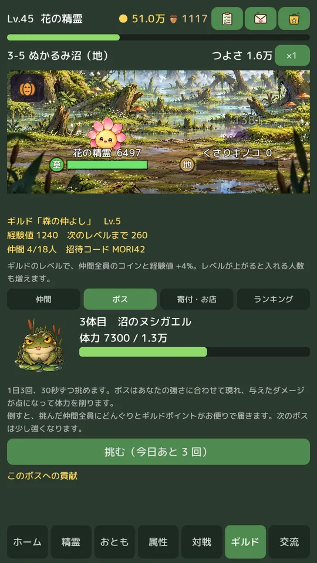
基本プレイ無料（アプリ内課金あり）。交流・ギルド・対戦にはインターネットへの接続が必要です。
異界ウォーカー開発中
異界の扉が開いた街を歩く、位置情報RPG
ある日、現代の街に異世界とつながる扉が開き、モンスターが溢れ出した。スマホを片手に、いつもの街を歩いてモンスターと戦い、異界の門を奪い合う位置情報RPGです。
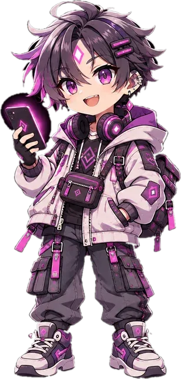
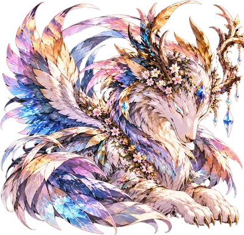
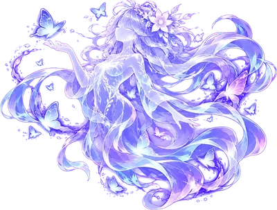
歩くほど強くなる
街を歩くとモンスターやスポットが現れます。歩きで進むと経験値とお金にボーナス。1km ごとに新しい仲間もついてきます。
作戦を組むオート戦闘
「HPが減ったら回復」など、行動の条件を上から並べて作戦を組めます。あとは歩くだけで、仲間と自動で戦います。
現代の武器 × 異界の武器
店で買えるのはチェーンソーやスタンロッドなど現代の武器。モンスターからは異界の武器が手に入ります。
門を奪い合う3つの陣営
封門機関・共鳴者・境界商会。街に開いた異界の門をめぐって、3つの陣営が争います。
現在開発中の試作版です。内容は予告なく変わることがあります。スマートフォンの位置情報（GPS）を使います。
アウトリング試作版
迷宮で捕まえて、掛け合わせて、強くする
地下60階まで続く迷宮を歩き、不思議な生き物「アウトリング」を弱らせて捕まえる探索ゲームです。掛け合わせるたびに能力の素質が伸び、色や柄も受け継がれます。代を重ねて、もっと深くへ。
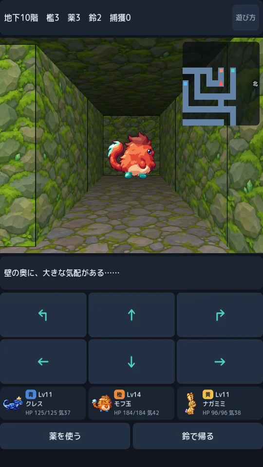
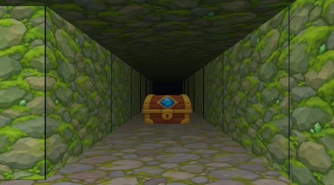
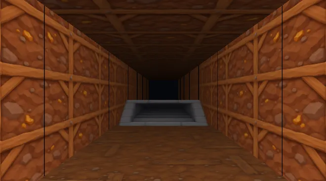
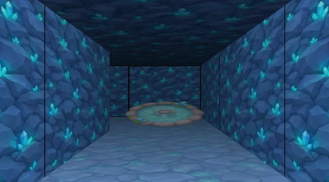
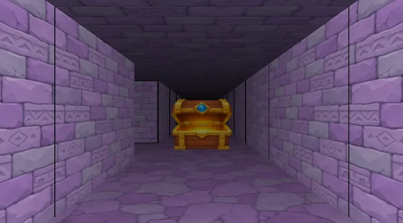
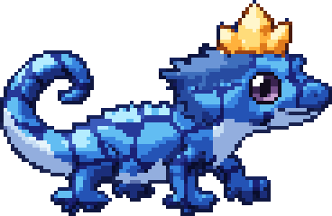
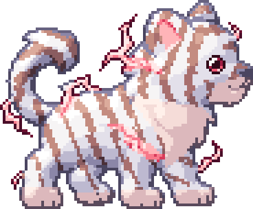
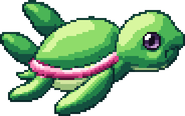
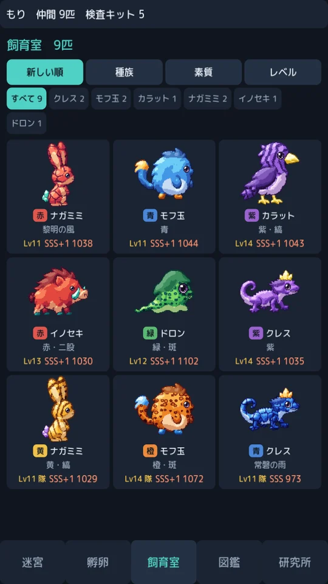
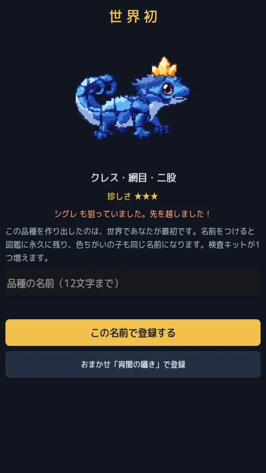
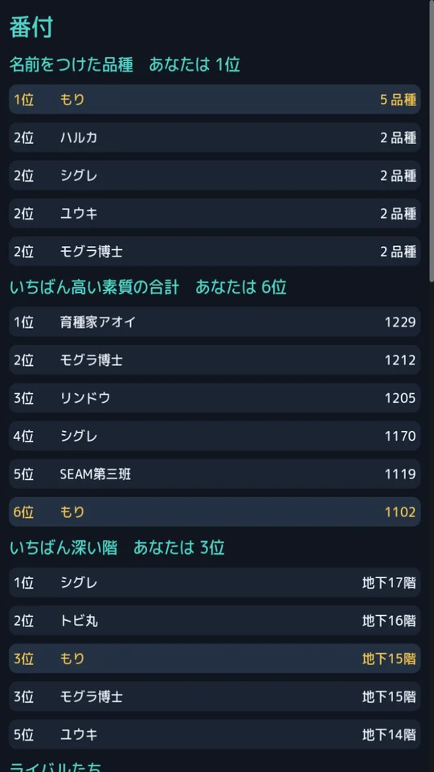
深く、どこまでも続く迷宮
10階ごとに景色も、棲む種族も変わります。壁の奥に隠れたヌシを探し、区域の主を倒して、さらに下へ。地下60階の先にも続きがあります。
弱らせて捕まえる
野生の生き物を戦って弱らせ、檻を投げて捕まえます。無事に持ち帰るまでが冒険です。
代を重ねて、素質が伸びる
能力ごとの素質を父か母から受け継ぎ、生まれるたびに2つが伸びます。伸びに上限はありません。珍しい色や柄は、掛け合わせてはじめて生まれます。
ライバルより先に、名前をつける
コンピューターが動かす10人のライバルも、新しい品種を狙っています。世界で最初に作り出せば、名付け親として図鑑に名前が残ります。
遊びの手ざわりを確かめるための試作版です。内容は大きく変わることがあり、セーブデータが引き継げない場合があります。
ABOUT
工房について
もりのようせい工房は、ひとりで運営している小さなゲーム工房です。
すき間時間にちょっと開いて、気づけば毎日の楽しみになっている。そんなゲームを目指して、スマートフォンとブラウザ向けのゲームをつくっています。
ご意見・ご感想は Discord やお問い合わせフォームからお気軽にどうぞ。
- 名前
- もりのようせい工房
- つくるもの
- スマートフォン・ブラウザ向けゲーム
- お問い合わせ
- お問い合わせフォーム
- コミュニティ
- Discord